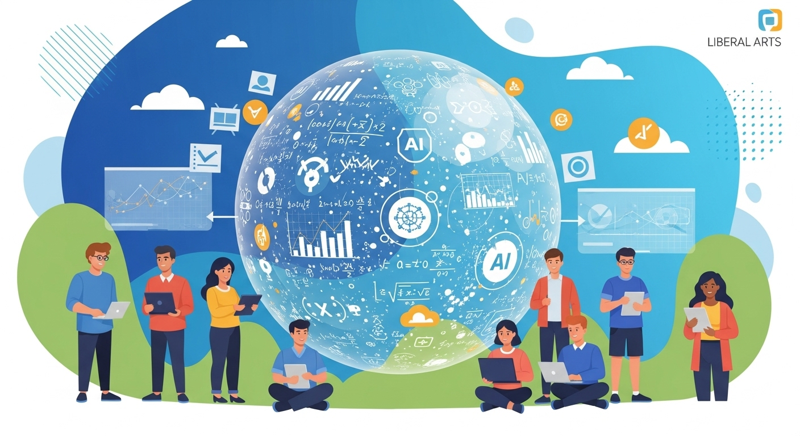
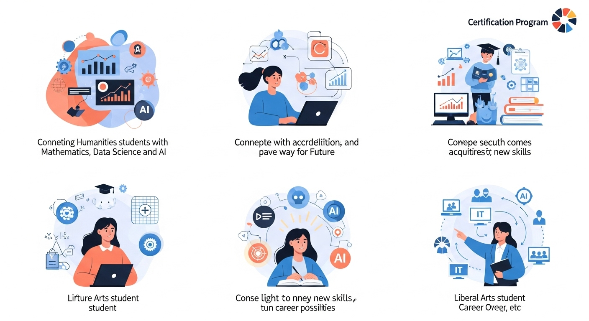
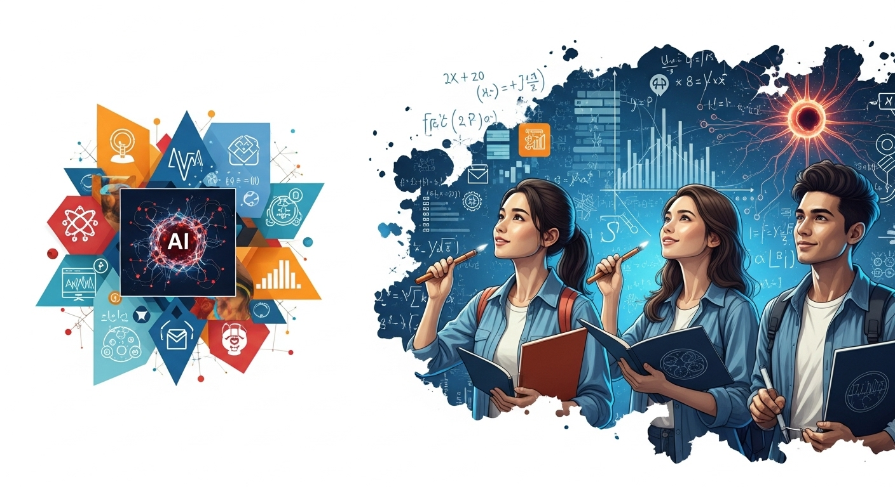

【文系学生必見】数理・DS・AI教育プログラム認定制度のメリットとキャリア活用術

導入
「文系だから、数学やプログラミングは関係ないかな…」
「AIに仕事が奪われるって聞くけど、自分は将来どうなるんだろう…」
こんにちは。この記事を読んでくださっているあなたは、もしかしたらこんな風に、ご自身の専門分野と、急速に発展するテクノロジーとの間に、少し距離を感じているかもしれませんね。特に、文系の学部に所属していると、データサイエンスやAIといった言葉が、どこか遠い世界の話のように聞こえてしまうこともあるのではないでしょうか。
しかし、もしあなたが、その「文系」というバックグラウンドを、これからの時代を生き抜くための「最強の武器」に変えることができるとしたら、どうでしょう？
現代社会は、まさに「データ」という新しい資源によって動いています。スマートフォンの利用履歴、オンラインショッピングの購買データ、SNSでの発言、街中のセンサーが集める情報…。私たちの身の回りには、ありとあらゆるデータが溢れています。そして、その膨大なデータを分析し、ビジネスや社会が抱える課題を解決に導く「データサイエンス」や、データから学習して賢い判断を下す「AI（人工知能）」の技術は、もはや一部のIT企業だけのものではなくなりました。
金融、マーケティング、法律、教育、医療、エンターテイメントに至るまで、あらゆる業界で、データを読み解き、活用できる人材が強く求められています。これは、理系の学生だけの話ではありません。むしろ、経済の仕組みを理解している人、人間の心理や行動を深く考察できる人、社会の構造や歴史的背景を知っている人、つまり、文系の知見を持つ人こそが、データサイエンスやAIの力を真に社会で活かすことができる、そんな時代が訪れているのです。
とはいえ、「じゃあ、何から始めればいいの？」と戸惑ってしまうのも当然です。独学でプログラミングを始めてみても、何が正解かわからず挫折してしまったり、膨大な情報の中から自分に必要な知識を見つけ出すのは至難の業です。
そんな、未来への意欲と現実の壁との間で悩む、あなたのような学生のために、国が主導して始まった素晴らしい制度があります。それが、今回ご紹介する「数理・データサイエンス・AI教育プログラム認定制度」です。
この制度は、大学で提供されるデータサイエンス教育の質を国が保証し、「このプログラムを修了した学生は、確かな基礎知識を持っていますよ」というお墨付きを与えてくれるものです。
この記事では、この認定制度が一体どのようなものなのか、そして、特に文系の学生であるあなたがこの制度を活用することで、どのようなメリットがあり、未来のキャリアをどのように切り拓いていけるのかを、一つひとつ丁寧に、そして具体的に解説していきます。
この記事を読み終える頃には、「文系だから無理」という思い込みが、「文系だからこそ、できることがある」という確信に変わっているはずです。さあ、一緒に、新しい時代の扉を開く鍵を手に入れにいきましょう。
数理・データサイエンス・AI教育プログラム認定制度とは？
まずは、この制度の全体像をしっかりと掴むところから始めましょう。「国の認定制度」と聞くと、少し堅苦しいイメージがあるかもしれませんが、その目的や仕組みを知れば、いかに学生にとって心強い味方であるかがわかります。
認定制度の目的と背景
この「数理・データサイエンス・AI教育プログラム認定制度」は、文部科学省が中心となって推進している、日本の未来を担う人材育成のための国家的なプロジェクトです。では、なぜ今、国を挙げてこのような制度が必要とされているのでしょうか。その背景には、私たちの社会が直面している大きな変化があります。
一つ目のキーワードは「Society 5.0」です。これは、日本が目指す未来社会の姿で、サイバー空間（仮想空間）とフィジカル空間（現実空間）を高度に融合させたシステムにより、経済発展と社会的課題の解決を両立する、人間中心の社会を指します。例えば、AIが膨大な交通データを分析して最適なルートを提案することで渋滞を解消したり、個人の健康データを基に病気の予防や早期発見を支援したり、といった社会です。このような社会を実現するためには、あらゆる分野でデータを活用し、AIを使いこなせる人材が不可欠となります。
二つ目の背景は、第四次産業革命とも呼ばれる、AIやIoT（モノのインターネット）といった技術革新の波です。これにより、産業構造そのものが大きく変わろうとしています。これまで人間の経験や勘に頼っていた部分が、データに基づく客観的な判断に置き換わっていく中で、企業の国際競争力を維持・強化するためにも、データサイエンスのスキルを持つ人材の育成が急務となっているのです。
しかし、これまで日本の大学教育では、データサイエンスやAIに関する教育は一部の理系学部に偏りがちでした。これからの時代は、文系・理系を問わず、すべての大学生がその基礎的な素養（リテラシー）を身につける必要があります。ちょうど、現代社会でパソコンやインターネットが当たり前に使えなければ仕事にならないのと同じように、数理・データサイエンス・AIの知識も、これからの社会人にとっての「読み・書き・そろばん」のような必須スキルになると考えられているのです。
そこで、国は二つの大きな目的を持ってこの認定制度をスタートさせました。
- 全国の大学における教育の普及と質の保証：各大学が質の高いデータサイエンス教育プログラムを設計・実施するのを促し、その内容が一定水準以上であることを国が審査・認定します。これにより、学生はどの大学にいても、安心して質の高い教育を受けられるようになります。
- 学生の学習成果の可視化と社会での評価：学生がプログラムを修了したという事実が、客観的なスキルの証明となります。企業側も、採用活動において「この認定制度を修了している学生は、データサイエンスの基礎を体系的に学んでいる」と判断できるため、学生と企業の間のミスマッチを防ぐことにも繋がります。
このように、認定制度は、これからの社会で活躍するために必要な知識を、すべての学生が身につけられるように、国が大学と社会の橋渡し役となって支援する、非常に重要な取り組みなのです。
リテラシーレベルと応用基礎レベルの違い
この認定制度には、目標とするレベルに応じて「リテラシーレベル」と「応用基礎レベル」という二つの区分があります。どちらを目指すかによって、学ぶ内容や深さが変わってきますので、それぞれの違いをしっかり理解しておきましょう。
【リテラシーレベル】〜すべての学生のための「現代の教養」〜
リテラシーレベルは、文系・理系を問わず、すべての大学生が身につけるべき基礎的な素養を育成することを目的としています。イメージとしては、前述した「現代の読み・書き・そろばん」に最も近いものです。
- 目的：AIやデータサイエンスが社会でどのように活用されているかを理解し、その恩恵を享受したり、データや情報に騙されずに正しく活用したりできる市民を育成すること。
- 対象：全学部・全学生。特に、これまで数理的な学びに馴染みがなかった文系学生にとっては、最初の入り口として最適なレベルです。
- 学ぶ内容（例）：
- データリテラシーの基礎：グラフや統計データを正しく読み解く力、データの見方に潜むバイアス（偏り）に気づく力。
- データ活用の心構え：データ保護やプライバシー、情報セキュリティに関する基本的な知識。
- AIの基本的な仕組み：AIが何を得意とし、何を苦手とするのか。機械学習の簡単な概念。
- 社会での活用事例：身の回りのどのようなサービスでAIやデータサイエンスが使われているかの理解。
リテラシーレベルでは、難しい数式を解いたり、自分でプログラミングを書いたりすることよりも、知識として理解し、社会の一員として適切に振る舞うための教養を身につけることに重きが置かれています。このレベルを修了するだけでも、ニュースで語られるAIの話題を深く理解できたり、世の中に溢れるデータに基づいた主張の信憑性を見抜く力が身についたりと、日常生活や将来の仕事において大きなプラスになります。
【応用基礎レベル】〜専門分野でAI・DSを「使いこなす」人材へ〜
応用基礎レベルは、リテラシーレベルの内容を土台として、さらに一歩踏み込み、自らの専門分野（経済学、法学、心理学など）に数理・データサイエンス・AIの知識や技術を応用できる人材を育成することを目的としています。
- 目的：自身の専門分野が抱える課題を、データを用いて分析し、解決策を導き出すための実践的な能力を養うこと。
- 対象：データサイエンスをより深く学び、将来のキャリアに直接活かしたいと考える意欲のある学生。文系学生であっても、このレベルに挑戦することで、市場価値の高い人材を目指すことができます。
- 学ぶ内容（例）：
- プログラミングの基礎：データ分析でよく使われるPythonやRといった言語の基本的な文法や使い方。
- 統計学の基礎：確率、統計的推測、仮説検定など、データから意味のある結論を導き出すための手法。
- 機械学習の基礎：回帰、分類、クラスタリングといった代表的な機械学習モデルの仕組みと実装方法。
- データハンドリング：Excelやデータベースを用いたデータの収集、整理、加工の技術。
応用基礎レベルでは、実際に手を動かしてデータを分析する演習や、特定の課題解決に取り組むPBL（Project-Based Learning）形式の授業が多くなります。文系学生にとっては、数学やプログラミングといった、これまであまり触れてこなかった分野の学習が必要になるため、挑戦にはなりますが、これを乗り越えることで得られるスキルは、あなたのキャリアの可能性を飛躍的に広げてくれるでしょう。
どちらのレベルを目指すかは、あなたの興味や将来の目標次第です。まずはリテラシーレベルで全体像を掴み、面白さを感じたら応用基礎レベルに挑戦してみる、というステップを踏むのも良い方法です。
プログラムで身につく基礎的な能力
では、これらのプログラムを修了することで、具体的にどのような能力が身につくのでしょうか。文部科学省は、学生が習得すべき能力をモデルカリキュラムとして示しています。ここでは、特に文系学生にとって重要となる能力をいくつかピックアップしてご紹介します。
- 課題発見・解決能力
これは、単にデータを分析する技術力だけを指すのではありません。現実社会で起きている問題（例えば、自社商品の売上が伸び悩んでいる、特定の地域の犯罪率が高いなど）に対して、「どのようなデータを集め、どう分析すれば原因がわかるだろうか？」と考え、データに基づいた解決策を提案する力です。文系学生が持つ社会や人間への洞察力と、データサイエンスの手法が結びつくことで、この能力は大きく開花します。 - データサイエンスの基礎力
これには、統計学の基本的な考え方、データを可視化（グラフ化）する技術、代表的な分析手法の理解などが含まれます。難しい数式をすべて暗記する必要はありませんが、「このデータからは何が言えそうで、何が言えないのか」を客観的に判断するための「物差し」を身につけることができます。これにより、感覚や経験だけに頼らない、説得力のある議論ができるようになります。 - AIの活用企画・設計・運用能力
AIをゼロから開発する能力ではなく、AIというツールを「どのように使えば課題解決に繋がるか」を考え、企画する能力です。例えば、法学部の学生であれば「過去の判例データをAIに学習させ、類似の判例を瞬時に検索するシステムは作れないか？」と考えたり、文学部の学生であれば「AIを使って、特定の作家の文体の特徴を分析できないか？」と考えたりする力です。AIの得意・不得意を理解しているからこそ、現実的で効果的な活用法を発想できるようになります。 - 倫理的・社会的課題への理解
これは、文系学生が特に貢献できる、非常に重要な能力です。AIやデータ活用は便利な一方で、個人情報の保護、AIによる差別の助長、判断プロセスの不透明性といった、様々な倫理的・社会的な課題をはらんでいます。例えば、採用選考にAIを導入した結果、過去のデータに潜む偏見を学習してしまい、特定の属性を持つ応募者を不当に低く評価してしまう、といった問題が実際に起きています。技術的な側面だけでなく、こうした負の側面にも目を向け、どうすれば公平で倫理的なAI・データ活用が実現できるかを考える視点は、これからの社会で不可欠です。
これらの能力は、どれも特定の業界や職種に限定されるものではありません。どのようなキャリアに進むにしても、あなたの思考を深め、仕事の質を高めてくれる、まさに「ポータブルスキル（持ち運び可能なスキル）」と言えるでしょう。
数理・DS・AI教育プログラム認定制度のメリット

この制度がどのようなものか、少しずつ見えてきたでしょうか。では次に、学生であるあなたにとって、この認定プログラムを履修・修了することが、具体的にどのようなメリットに繋がるのかを、3つの視点から詳しく見ていきましょう。
メリット１．客観的なスキルの証明と信頼性向上
大学生活で何か新しいことを学んだ時、その成果を他者に伝えるのは意外と難しいものです。例えば、「独学でデータ分析の勉強をしました」と面接でアピールしたとしましょう。もちろん、その学習意欲は素晴らしいものですが、面接官は「どのくらいのレベルまで理解しているのだろうか？」「基礎は本当に身についているのだろうか？」といった疑問を抱くかもしれません。あなたの努力が、必ずしも正しく評価されるとは限らないのです。
ここで、数理・DS・AI教育プログラム認定制度が大きな力を発揮します。この制度を修了したという事実は、「文部科学省が定めた基準を満たす、体系的な教育を受けた」という客観的な証明になります。これは、いわば国からのお墨付きです。
履歴書やエントリーシートの資格・特技欄に「数理・データサイエンス・AI教育プログラム（リテラシーレベル）修了」と一行書くだけで、あなたの学習成果は一気に説得力を持ちます。それは、単なる自己申告ではなく、第三者機関によって保証されたスキルであることを意味するからです。
これにより、採用担当者はあなたに対して、以下のようなポジティブな印象を持つでしょう。
- 基礎学力の信頼性：「この学生は、データサイエンスの基本的な概念や倫理観について、場当たり的ではなく、順序立ててしっかりと学んでいるな」という安心感。
- 学習意欲の高さ：「大学の専門科目に加えて、これからの時代に必要とされるスキルを自主的に学ぼうとする、意欲的で前向きな学生だ」という評価。
- 論理的思考力の素養：データサイエンスの学習過程では、物事を構造的に捉え、論理的に考える訓練が繰り返し行われます。そのため、「論理的思考力の基礎が身についている可能性が高い」という期待。
特に文系学生の場合、「数学やITは苦手」という先入観を持たれてしまうことが稀にあります。しかし、この認定制度を修了していることで、そうしたステレオタイプな見方を覆し、「文系の素養と数理的な素養を併せ持つ、バランスの取れた人材である」という強力なメッセージを発信することができます。
このように、認定制度はあなたの努力を「見える化」し、社会的な信頼性を高めてくれる、非常に価値のあるパスポートとなるのです。
メリット２．就職活動でのアピールポイントとなる
就職活動において、他の学生との差別化は非常に重要なテーマです。特に、多くの学生が同じような経験（サークル活動、アルバイト、短期留学など）をアピールする中で、いかにして「自分ならではの強み」を伝え、採用担当者の記憶に残るかが合否を分けます。
その点において、「文系学生でありながら、国の認定するデータサイエンスプログラムを修了した」という経験は、極めてユニークで強力なアピールポイントとなります。
面接で「なぜ、文系のあなたがデータサイエンスを学ぼうと思ったのですか？」と質問されたら、それは絶好の自己PRのチャンスです。この質問に答えるプロセスを通じて、あなたは自身の様々な能力をアピールすることができます。
- 学習意欲と主体性：「AIが社会を大きく変えていく中で、自分の専門である経済学の知識を活かすためには、データという新しい言語を学ぶことが不可欠だと考えたからです。大学のプログラムを主体的に選択し、最後までやり遂げました」と語ることで、あなたの高い学習意欲と主体性を示すことができます。
- 論理的思考力と課題解決能力：「プログラムの演習で、〇〇という社会課題をテーマにデータ分析を行いました。その際、仮説を立て、必要なデータを収集・分析し、データに基づいた解決策を提案するという一連のプロセスを経験しました。この経験を通じて培った論理的思考力は、貴社の〇〇という事業においても必ず活かせると考えています」と、具体的なエピソードを交えて話すことで、単なる知識だけでなく、実践的な能力が身についていることをアピールできます。
- 専門性とのシナジー：「私は法学部で知的財産法を専攻しています。データサイエンスを学んだことで、AIが生成したコンテンツの著作権問題など、テクノロジーと法律が交差する新しい領域への理解が深まりました。この複合的な視点を活かして、貴社のリーガルテック事業に貢献したいです」というように、自分の専門分野とデータサイエンスをどう結びつけて考えているかを語ることで、あなただけのユニークな価値を提示できます。
現在、多くの企業が「DX（デジタルトランスフォーメーション）」を推進しており、文系・理系を問わず、全社員のデジタルリテラシー向上を目指しています。そんな中、入社前からデータサイエンスの基礎を身につけているあなたは、企業にとって「将来の成長が期待できる、投資価値の高い人材」と映るはずです。
他の学生がまだ気づいていない、この新しい学びの領域に一歩踏み出すこと。それ自体が、あなたの先見性やチャレンジ精神の証明となり、就職活動において大きなアドバンテージとなることは間違いありません。
メリット３．体系的な学習で効率的なスキル習得
「データサイエンスを学びたい」と思っても、いざ独学で始めようとすると、多くの壁にぶつかります。
- 「何から手をつければいいのかわからない…」
- 「統計学、プログラミング、機械学習…学ぶべき範囲が広すぎる…」
- 「エラーが出て先に進めないけど、誰に聞けばいいかわからない…」
- 「モチベーションが続かずに、三日坊主になってしまった…」
このような経験をしたことがある人も少なくないでしょう。独学は自由度が高い反面、学習の全体像が見えにくく、挫折しやすいという大きなデメリットがあります。
その点、大学が提供する認定プログラムは、教育の専門家によって設計された、体系的で効率的なカリキュラムが用意されています。これは、独学にはない、非常に大きなメリットです。
- 整備された学習ロードマップ：プログラムでは、まず統計学の基礎やデータリテラシーといった土台となる知識から学び始め、次にプログラミング、そして機械学習の応用へと、無理なくステップアップできるようにカリキュラムが組まれています。あなたは、示されたロードマップに沿って一つひとつの科目を履修していくだけで、自然と必要な知識とスキルが網羅的に身につきます。学習の順序に迷う必要はありません。
- 質問できる環境：学習を進める上で、疑問や不明点が出てくるのは当然のことです。プログラムでは、講義を担当する教授や、学生のサポート役であるTA（ティーチング・アシスタント）に気軽に質問することができます。特に、プログラミングのエラーのように、自分一人では解決が難しい問題に直面した時、すぐに相談できる相手がいる環境は、学習の挫折を防ぐ上で非常に重要です。
- 共に学ぶ仲間の存在：同じプログラムを履修している仲間がいることも、大きな支えになります。わからない部分を教え合ったり、難しい課題に一緒に取り組んだり、互いの学習の進捗を報告し合ったりすることで、モチベーションを高く維持することができます。一人で黙々と勉強するよりも、仲間と切磋琢磨する環境の方が、学習効果は何倍にも高まるでしょう。
- 質の高い教材と学習環境：大学は、質の高い教科書やオンライン教材、演習用のデータセット、高性能なPCが設置された教室など、学習に必要なリソースを豊富に提供してくれます。個人でこれらすべてを揃えるのは大変ですが、大学のプログラムを利用すれば、最適な環境で効率的に学習を進めることができます。
貴重な大学の4年間という時間を無駄にしないためにも、専門家が設計した最短ルートで、確実にスキルを習得できる認定プログラムの活用は、非常に賢い選択と言えるでしょう。
文系学生が数理・DS・AIを学ぶメリット
さて、ここからはさらに視点を深めて、なぜ「文系学生が」数理・データサイエンス・AIを学ぶことに大きな価値があるのか、その理由を探っていきます。理系の学生が学ぶのとはまた違う、文系ならではの強みとは一体何なのでしょうか。
メリット１．経済学とAI・DSの知識を掛け合わせる強み
アウトラインでは「経済学」と特定されていましたが、これは全ての文系学問に当てはまる、非常に重要な視点です。それは、「ドメイン知識 × データサイエンス」という掛け算の強みです。
「ドメイン知識」とは、特定の分野における専門知識や業務知識のことを指します。経済学、法学、社会学、心理学、文学、歴史学…あなたが大学で専攻している学問は、まさにこのドメイン知識の宝庫です。
一方で、データサイエンスは、データから知見を引き出すための強力な「ツール」や「手法」です。しかし、このツールはそれ単体では真価を発揮しません。「何を分析すべきか」「分析結果が何を意味するのか」を正しく解釈するためには、その背景にあるドメイン知識が不可欠なのです。
ここに、文系学生が輝く大きなチャンスがあります。
- 経済学部のあなたなら…
あなたは、需要と供給の法則、市場メカニズム、消費者のインセンティブ（動機）といった経済学の理論を学んでいます。その知識があれば、単に商品の売上データを眺めるだけでなく、「価格を10%下げた時、需要は理論上どう変化するはずか？実際のデータと比べてみよう」「この消費者の購買行動の裏には、どのような心理が働いているのだろうか？」といった、深い洞察に基づいた仮説を立てることができます。AIによる需要予測モデルの結果を見ても、「この予測は、経済学のセオリーから見て妥当か？」と批判的に吟味することができます。 - 法学部のあなたなら…
あなたは、法律の条文解釈や過去の判例の重要性を知っています。その知識があれば、膨大な裁判記録のテキストデータを分析する際に、どのキーワードに注目すべきか、どのような判例の分類が法的に意味を持つのかを判断できます。契約書レビューを支援するAIを開発するプロジェクトに参加したとしても、どのような条項にリスクが潜んでいるかを指摘し、AIの精度向上に貢献できるでしょう。 - 社会学部や心理学部のあなたなら…
あなたは、社会調査の手法や、人間の認知バイアスについて学んでいます。その知識があれば、アンケートデータを分析する際に、質問の仕方が回答に与える影響を考慮したり、SNSのデータから人々の感情を分析する際に、その発言の背景にある社会的な文脈を読み解いたりすることができます。データに現れる人々の行動を、より深く、多角的に理解することができるのです。 - 文学部や歴史学部のあなたなら…
あなたは、文章の読解力や、歴史的文脈を理解する力に長けています。その知識は、古い文献や文学作品をテキストマイニング（文章のデータ分析）する「デジタル・ヒューマニティーズ」という新しい学問分野で大いに活かされます。ある単語が時代と共にどう意味を変えていったか、特定の作家が好んで使う表現は何か、といった分析は、まさに文系の知見とデータサイエンスが融合した成果です。
このように、データサイエンスのスキルを持つ理系の専門家はたくさんいますが、「文系の深いドメイン知識」と「データサイエンスのスキル」の両方を高いレベルで兼ね備えている人材は、まだ非常に希少です。この二つの知識を掛け合わせることで、あなたは「データを分析できる人」から、「データを使って、意味のある問いを立て、本質的な課題を解決できる人」へと進化することができるのです。これこそが、文系学生が目指すべき、唯一無二の価値と言えるでしょう。
メリット２．幅広い業界・職種での活躍可能性
「データサイエンスを学んだら、IT企業や研究職にしか行けないのでは？」と思うかもしれませんが、それは大きな誤解です。むしろ、その逆です。数理・データサイエンス・AIのスキルは、あらゆる業界・職種で求められる「汎用スキル」であり、あなたのキャリアの選択肢を劇的に広げてくれます。
特に、多くの文系学生が活躍する次のような職種において、そのスキルは強力な武器となります。
- マーケティング・企画職
もはや、マーケティングは経験や勘だけで行えるものではなくなりました。顧客の年齢・性別・購買履歴といったデータを分析してターゲット顧客層を明確にしたり（セグメンテーション）、Webサイトのアクセスログを解析して広告の効果を測定したり、SNSの投稿から自社製品の評判を分析したりと、あらゆる場面でデータ活用が必須です。データに基づいた説得力のある企画を立案できる人材は、どの企業でも引く手あまたです。 - 営業職
「営業は足で稼ぐもの」という時代は終わりつつあります。過去の取引データを分析して、次にアプローチすべき有望な顧客リストを作成したり、顧客ごとのニーズを予測して最適な商品を提案したりする「データドリブンな営業」が主流になっています。データという客観的な根拠を持って商談に臨むことで、あなたの提案の説得力は格段に増すでしょう。 - 人事職
採用、育成、配置、評価といった人事の領域でも、「HRテック（Human Resources Technology）」と呼ばれるテクノロジー活用が進んでいます。従業員の勤怠データやパフォーマンス評価を分析して離職の兆候を早期に発見したり、ハイパフォーマーに共通する行動特性を見つけ出して採用や育成に活かしたりと、データに基づいた科学的な人事戦略の重要性が高まっています。 - 金融（銀行・証券・保険）
金融業界は、もともとデータを扱うことに長けた業界ですが、AIの登場でその動きはさらに加速しています。AIを用いた株価予測、個人の信用力を評価するクレジットスコアリング、クレジットカードの不正利用検知など、活躍の場は無数にあります。経済学や商学の知識とデータ分析スキルを併せ持つ人材は、まさにうってつけです。 - コンサルティング
コンサルタントの仕事は、クライアント企業が抱える経営課題を解決することです。その際、データに基づいた現状分析と、それに基づく論理的な戦略提案は不可欠です。市場データ、財務データ、顧客データなど、様々なデータを読み解き、クライアントを納得させられるインサイト（洞察）を導き出す能力は、コンサルタントにとって最も重要なスキルの一つです。
これらはほんの一例に過ぎません。製造業のサプライチェーン管理、小売業の在庫最適化、自治体の政策立案、教育分野での個別最適化学習など、あなたが想像する以上に、データサイエンスの応用範囲は広いのです。
文系のあなたがデータサイエンスを学ぶということは、特定の専門職を目指すというよりも、「どのような業界・職種に進んだとしても、そこで活躍できるためのOS（オペレーティングシステム）を自分の中にインストールする」ようなものだと考えてください。それは、あなたのキャリアの可能性を無限に広げ、将来の環境変化にも柔軟に対応できる、しなやかな強さを与えてくれるはずです。
メリット３．AI時代に対応できる人材への成長
「将来、自分の仕事はAIに奪われてしまうのではないか…」
多くの人が、漠然とそんな不安を抱えています。確かに、単純な事務作業やデータの入力、定型的な分析など、一部の仕事はAIに代替されていくでしょう。
しかし、ここで重要なのは、AIを恐れるのではなく、AIを「賢い道具」として使いこなす側に回るという視点です。数理・データサイエンス・AI教育プログラムで学ぶことは、まさにそのための第一歩となります。
- AIを「使う側」の人材になる
プログラムを通じてAIの仕組みや原理を理解することで、あなたはAIをブラックボックスとして恐れるのではなく、その特性を理解した上で活用できる人材になります。例えば、文章生成AIにレポート作成を手伝ってもらう際にも、ただ丸投げするのではなく、「こういう観点で、こういう構成で書いて」と的確な指示（プロンプト）を与えることができます。AIを、自分の能力を拡張してくれる優秀なアシスタントとして、自在に使いこなせるようになるのです。これは、AIに仕事を奪われるのではなく、AIを使って仕事の生産性を飛躍的に向上させられることを意味します。 - AIの判断を鵜呑みにしない「批判的思考力」
AIは万能ではありません。学習したデータに偏りがあれば、差別的な判断を下してしまうこともありますし、時にはもっともらしい嘘をつくこと（ハルシネーション）もあります。AIの仕組みを知らない人は、AIが出した答えを無条件に信じてしまうかもしれません。しかし、あなたはその答えの裏にあるデータの存在や、アルゴリズムの限界を想像することができます。「このAIの判断は、どのようなデータに基づいているのだろうか？」「考慮されていない視点はないだろうか？」と、一歩引いて批判的に吟味し、最終的な意思決定は人間が責任を持って行う、という姿勢が身につきます。この批判的思考力は、AIが社会に浸透すればするほど、その価値を高めていきます。 - 人間ならではの価値を発揮する
AIがデータ分析やパターン認識を得意とする一方で、人間には人間にしかできないことがあります。それは、クライアントの気持ちに寄り添って共感すること、倫理的なジレンマに対して深く悩み、判断を下すこと、全く新しいビジョンを描いて人々を巻き込んでいくこと、といった、創造性や共感性、倫理観が求められる領域です。AIに任せられる作業はAIに任せ、人間はより高度で付加価値の高い、こうした「人間らしい」仕事に集中できるようになります。文系学問で培われる、人間や社会に対する深い洞察力は、まさにこの領域でこそ真価を発揮するのです。
AI時代に求められるのは、AIと競争する人材ではなく、AIと協働できる人材です。認定プログラムで得られる知識は、あなたが未来の変化にただ怯えるのではなく、変化の波を乗りこなし、新しい価値を創造していくための、羅針盤となってくれるでしょう。
認定制度の注意点とデメリット
ここまで、認定制度の素晴らしいメリットをたくさんお伝えしてきましたが、物事には必ず光と影があります。この制度に挑戦する前に、知っておくべき注意点や現実的な側面についても、正直にお話ししておきたいと思います。これらを事前に理解しておくことで、より現実的な計画を立て、途中で挫折するのを防ぐことができます。
デメリット１．学習時間と努力の確保が必要
まず、最も重要なことは、この認定制度は「楽して取れる資格」では決してない、ということです。特に、応用基礎レベルを目指す場合、これまで文系の学問を中心に学んできたあなたにとっては、いくつかのハードルが待ち受けているかもしれません。
- 学習時間の確保：大学の講義は、専門科目の勉強だけでも大変です。それに加えて、データサイエンスのプログラムを履修するとなると、当然ながら、さらに多くの学習時間が必要になります。サークル活動やアルバイト、友人との時間など、大学生活でやりたいことはたくさんあるでしょう。それらと学習を両立させるためには、しっかりとしたタイムマネジメントと、時には何かを優先し、何かを我慢するという覚悟が求められます。
- 数学的な知識の壁：データサイエンスの根幹には、統計学や線形代数、微分積分といった数学的な考え方が存在します。高校時代に数学が苦手だった、あるいは大学に入ってからは全く触れていないという人にとっては、この部分が最初のつまずきのポイントになる可能性があります。もちろん、プログラムは初学者向けに丁寧に解説してくれますが、それでも講義についていくためには、予習や復習、場合によっては高校数学の学び直しといった、地道な努力が必要になる場面も出てくるでしょう。
- プログラミングの壁：応用基礎レベルでは、Pythonなどのプログラミング言語を学びます。プログラミングは、自分が書いたコードが思った通りに動かなかったり、些細なミスでエラーが延々と出続けたりと、最初のうちは忍耐力が試されることが多い学問です。論理的に物事を組み立てる思考法に慣れるまで、ある程度の時間と試行錯誤が必要です。
しかし、これらの壁は決して乗り越えられないものではありません。大切なのは、最初から完璧を目指さないことです。わからないことがあれば、プライドを捨てて教授やTA、友人に質問する。大学が用意している学習支援センターやオンライン教材を積極的に活用する。そして何より、「なぜ自分はこれを学びたいのか」という最初の目的意識を忘れずに、少しずつでも前に進み続けることが重要です。この苦労を乗り越えた経験そのものが、あなたの自信と粘り強さを育んでくれるはずです。
デメリット２．プログラム内容と自身の専門のミスマッチ
「数理・データサイエンス・AI教育プログラム」と一括りに言っても、その内容は大学によって千差万別です。認定制度は国が定めた最低限の基準をクリアしていることを保証するものですが、各大学が独自の特色を打ち出しているため、その中身をよく確認しないと、「思っていたのと違った」というミスマッチが起こる可能性があります。
- 理論重視か、実践重視か：ある大学のプログラムは、統計学の理論や数学的な背景をじっくりと学ぶ、学術的な色合いの濃いものかもしれません。一方で、別の大学では、とにかくPythonを使って手を動かし、実践的なデータ分析のスキルを身につけることに重点を置いているかもしれません。あなたがどちらを求めているかによって、満足度は大きく変わってきます。
- 文系向けか、理系向けか：全学向けのプログラムであっても、その前提知識のレベル感は様々です。文系の学生がつまずきやすいポイントを丁寧に解説してくれるプログラムもあれば、理系の学生をメインターゲットとしていて、数学やプログラミングの基礎知識があることを前提に進んでしまうプログラムも存在するかもしれません。
- 専門分野との連携：あなたの専門分野（経済学、法学など）と連携した応用的な科目や演習が用意されているかどうかも重要なポイントです。例えば、経済学部生向けの「計量経済学と機械学習」といった科目や、社会学部生向けの「社会調査データ分析演習」といった科目が充実していれば、学習のモチベーションも高まり、専門知識との相乗効果も生まれやすいでしょう。
こうしたミスマッチを防ぐためには、履修登録をする前に、必ずシラバスを隅々まで読み込むことが不可欠です。シラバスには、授業の目標、各回のテーマ、使用する教科書やツール、成績評価の方法などが詳しく書かれています。
また、可能であれば、そのプログラムを担当している先生に直接話を聞きに行ったり、既に履修している先輩から話を聞いたりするのも非常に有効です。自分の興味関心や将来の目標と、プログラムの内容が本当に合致しているかを、多角的な情報から慎重に判断するようにしましょう。
デメリット３．認定制度の認知度と企業評価の現状
これは、制度のメリットと表裏一体の部分でもあります。この認定制度は2021年度から始まった、まだ比較的新しい取り組みです。そのため、残念ながら、すべての企業の採用担当者がこの制度の存在や価値を正しく認識しているとは限らない、というのが現状です。
あなたが面接で「数理・データサイエンス・AI教育プログラムを修了しました」と伝えても、面接官が「それは一体どういう制度で、何を学んだのですか？」と聞き返してくる可能性は十分にあります。
したがって、「認定を取ったから安心」と考えるのは早計です。大切なのは、認定という「看板」に頼るのではなく、その中身を自分の言葉で語れることです。
- 「何を学んだか」を具体的に説明する：「このプログラムを通じて、統計的な仮説検定の手法や、Pythonを用いたデータの前処理・可視化の技術、そして回帰分析による予測モデルの構築などを学びました」というように、専門用語を使いすぎず、かつ具体的に説明できる準備をしておく必要があります。
- 「何ができるようになったか」をアピールする：知識だけでなく、それを使って何ができるようになったかを伝えることが重要です。例えば、「演習では、公開されている顧客データを用いて、解約しやすい顧客の特徴を分析し、解約防止策を提案するというプロジェクトに取り組みました。この経験を通じて、課題設定からデータ分析、施策提案までの一連の流れを実践する力を身につけました」といったように、具体的なエピソードを交えて語れると、説得力が格段に増します。
- 「それをどう活かしたいか」を志望動機に結びつける：そして最も重要なのが、学んだスキルを、その企業でどのように活かしたいかを情熱を持って伝えることです。「貴社が展開している〇〇事業において、私が学んだデータ分析のスキルを活かし、顧客満足度の向上に貢献したいと考えています」というように、自分の学びと企業の未来を繋げて語ることで、単なるスキルホルダーではなく、共に働きたいと思わせる魅力的な人材として評価されるでしょう。
認定制度の認知度は、今後、修了生が社会で活躍するにつれて着実に高まっていくはずです。しかし、現時点では、あなたが制度の「広報担当」になるくらいの気持ちで、その価値を自らの口で伝えていく必要がある、ということを心に留めておいてください。
認定制度取得へのステップ
ここまで読んで、「自分も挑戦してみたい！」という気持ちが高まってきたでしょうか。ここからは、実際に認定プログラムの修了を目指すための、具体的なステップを3段階に分けて解説していきます。
ステップ１．認定プログラムの履修方法と修了要件
まず最初に行うべきは、情報収集です。あなたの大学で、この認定制度がどのように運用されているかを確認しましょう。
- プログラムの有無を確認する
最も確実な方法は、大学の公式ウェブサイトを確認することです。「数理・データサイエンス・AI教育プログラム」といったキーワードで学内検索をかけてみましょう。多くの場合、特設ページや、教務課・学務課のお知らせ欄に情報が掲載されています。また、文部科学省のウェブサイトにも、認定を受けた大学の一覧が公開されていますので、そちらから確認することもできます。もし見つからない場合は、所属学部の事務室や、大学の教務課に直接問い合わせてみるのが良いでしょう。 - 履修登録の方法を調べる
プログラムが提供されていることがわかったら、次にその履修方法を確認します。大学によって仕組みは様々です。- 自動的に対象となる場合：一部の大学では、特定の学部・学科の学生は、通常のカリキュラムをこなしていくだけで、自動的にプログラムの修了要件を満たせるようになっている場合があります。
- 別途登録が必要な場合：多くの場合は、通常の履修登録とは別に、「プログラム履修生」としての登録申請が必要になります。申請期間が限られていることが多いので、見逃さないように注意が必要です。
- 選抜がある場合：人気のプログラムでは、希望者の中から成績や志望理由書によって選抜が行われることもあります。その場合は、選考のスケジュールや内容をしっかりと確認し、準備を進めましょう。
- 修了要件を把握する
プログラムを「修了」したと認定されるためには、定められた要件を満たす必要があります。これも大学によって異なりますが、一般的には以下のような項目が定められています。- 対象科目の単位取得：「必修科目〇単位以上、選択科目△単位以上、合計□単位以上を取得すること」といった形で、取得すべき単位数が定められています。どの科目が対象になっているのかをリストアップし、自分の卒業要件と照らし合わせながら、無理のない履修計画を立てることが重要です。
- 成績要件：対象科目の成績（GPAなど）が一定基準以上であることが求められる場合もあります。
- 最終レポートや成果発表：プログラムの集大成として、特定のテーマに関するレポートの提出や、成果発表会でのプレゼンテーションが課されることもあります。
これらの情報は、大学が発行している「履修要覧」やプログラムのガイドブックに詳しく記載されています。特に、4年間の履修計画を立てる上では、どの学年でどの科目を履修すべきかを考えることが非常に重要です。低学年のうちに基礎的な科目を固め、高学年で応用的な科目に進むのが一般的ですが、自分の専門科目の忙しさなども考慮しながら、長期的な視点で計画を立てましょう。
ステップ２．身につく能力の理解
履修方法と要件を確認したら、次に、そのプログラムを通じて「具体的にどのような能力が身につくのか」を、もう一度深く理解するステップに進みます。これは、学習のモチベーションを維持し、目標を明確にする上で非常に重要です。
漠然と「データサイエンスが学べる」と考えるのではなく、文部科学省が示している「数理・データサイエンス・AI（リテラシーレベル）モデルカリキュラムにおける学習目標」や「（応用基礎レベル）で習得すべき能力」といった資料に目を通してみましょう。
そこには、
- 「社会におけるデータ・AIの活用事例を具体的なイメージをもって説明できる」
- 「データ・AIを扱う上での留意点（ELSI※など）を説明できる」
- 「代表的なデータハンドリング（収集・整形・可視化など）の手法を理解し、目的に応じて使い分けることができる」
- 「代表的な機械学習の手法を理解し、目的に応じて使い分けることができる」
といった、具体的な目標が掲げられています。
（※ELSI：Ethical, Legal and Social Issues の略。倫理的・法的・社会的課題のこと）
これらの項目を一つひとつ読みながら、「今の自分にはどの能力が足りないか」「どの能力を特に重点的に身につけたいか」を自問自答してみてください。
例えば、「自分は将来、マーケティングの仕事に就きたいから、『データ可視化』や『顧客セグメンテーション（分類）』の能力を特に強化したいな」とか、「法学部での学びを活かすために、『データ倫理』や『プライバシー保護』に関する知識を誰よりも深く理解しよう」といったように、自分なりの学習テーマや目標を設定するのです。
このように、身につく能力を具体的にイメージすることで、一つひとつの授業を受ける際の意識が大きく変わります。ただ単位を取るために受動的に講義を聞くのではなく、「この授業は、自分の〇〇という能力を高めるために重要なんだ」と能動的な姿勢で臨むことができるようになり、学習効果が格段に向上します。
ステップ３．大学ごとのカリキュラム例の確認
最後のステップとして、あなたの大学が提供しているプログラムの具体的なカリキュラム、つまり「時間割」を詳しく確認しましょう。ステップ１で確認した修了要件（どの科目を何単位取るか）と、ステップ２で設定した自分なりの学習目標を照らし合わせながら、どの科目を履修していくかを選んでいきます。
ここで確認すべきポイントは以下の通りです。
- 科目名とシラバス：科目名だけでなく、シラバスを読み込み、授業の具体的な内容を把握します。「データサイエンス入門」という同じ名前の科目でも、大学によって扱うテーマやレベルは全く異なります。
- 使用するツールや言語：データ分析にExcelを使うのか、統計ソフトのSPSSを使うのか、プログラミング言語のPythonやRを使うのか。自分が学びたいツールが使われているかを確認しましょう。特に、応用基礎レベルを目指す場合は、Pythonが学べるかどうかは重要なポイントになることが多いです。
- 授業形式（講義、演習、PBL）：知識をインプットする講義形式の授業だけでなく、実際に手を動かして分析を行う「演習」や、チームで課題解決に取り組む「PBL（Project-Based Learning）」形式の授業がどれくらいあるかを確認しましょう。実践的なスキルを身につけたい場合は、演習やPBLの比重が高いプログラムがおすすめです。
- 担当教員の専門分野：各科目を担当する先生が、どのような専門分野の研究者なのかを調べてみるのも面白いでしょう。先生の専門分野によって、授業で扱われる事例やデータの種類に特色が出ることがあります。
これらの情報を総合的に判断し、自分だけの「最強の時間割」を組み立てていきましょう。もし選択に迷ったら、プログラムの担当教員や、学内のキャリアセンターの職員、先輩などに相談してみることを強くお勧めします。彼らは、あなたの興味や目標に合った科目の選び方について、きっと親身にアドバイスをしてくれるはずです。
他大学の取り組み事例から学ぶ認定制度の活用法
自分の大学のプログラムを理解するのと同時に、他の大学がどのようなユニークな取り組みを行っているかを知ることも、この制度を最大限に活用するためのヒントになります。ここでは、いくつかの架空の事例を通じて、認定制度の賢い活用法を探っていきましょう。
活用法１．文系学部での認定取得事例
【事例１：A大学 法学部 Bさんの場合】
Bさんは、将来、企業の法務部で働きたいと考えている法学部の3年生です。1年生の時に、大学が提供する「数理・DS・AI教育プログラム（リテラシーレベル）」の存在を知り、これからの法務担当者にはITやAIの知識が不可欠だと感じ、履修を決意しました。
- 履修した科目：「データリテラシー入門」「AI社会と法」「情報倫理」など。
- 学びのポイント：Bさんは特に、AIが社会に与える影響と、それに伴う法的な課題を学ぶ「AI社会と法」という科目に力を入れました。講義では、自動運転車が事故を起こした際の責任の所在や、AIによる採用選考の公平性といった、現実的なテーマが扱われました。
- 専門との融合：プログラムの最終レポートでは、「AIが生成した文章や画像の著作権の帰属」というテーマを選び、法学の専門知識とプログラムで学んだAIの知識を融合させた考察を行いました。このレポートは高く評価され、Bさんの自信に繋がりました。
- キャリアへの活用：就職活動の面接では、「私は法学の知識に加え、AIがもたらす新たな法的リスクを理解し、データ倫理の観点から事業を評価することができます」とアピール。テクノロジーに強い法務人材として、複数のIT企業から内定を得ることができました。
【事例２：C大学 文学部 Dさんの場合】
Dさんは、日本近代文学を専攻する文学部の4年生。一見、データサイエンスとは最も縁遠いように思えますが、彼女は「応用基礎レベル」のプログラムに挑戦し、見事に修了しました。
- 挑戦のきっかけ：Dさんは、卒業論文で敬愛する作家の文体を客観的に分析したいと考えましたが、その手法がわからずにいました。そんな時、認定プログラムの中に「テキストマイニング入門」という科目があることを知り、挑戦を決意しました。
- 学習のプロセス：最初はPythonのプログラミングに苦労しましたが、TAの先輩に何度も質問したり、同じプログラムを履修する理系の友人に教えてもらったりしながら、粘り強く学習を続けました。
- 専門との融合：プログラムで学んだ技術を駆使し、卒業論文では、その作家の全作品をデジタルデータ化し、作品ごとに使われる単語の頻度や、一文の長さ、接続詞の使い方などを統計的に分析。作家の文体が年代と共にどう変化していったかを、客観的なデータに基づいて明らかにしました。この独創的な研究は、指導教官からも絶賛されました。
- キャリアへの活用：Dさんは、出版社への就職を目指していました。面接では、卒業論文の研究内容を具体的に説明し、「編集者として、経験や勘だけでなく、データに基づいた書籍の企画やマーケティング戦略を立案したい」と語りました。そのユニークな視点が評価され、大手出版社への就職を決めました。
これらの事例からわかるように、大切なのは、認定プログラムで学んだことを、いかに自分の専門分野という「ホームグラウンド」に引きつけて考え、自分だけのオリジナルな強みに昇華させるか、ということです。
活用法２．独自の学習支援体制と環境の活用
多くの大学は、学生がプログラムをスムーズに履修できるよう、様々な学習支援体制を整えています。これらを活用しない手はありません。
- 学習相談室・オフィスアワーの活用
多くの大学では、数学やプログラミングの基礎的な質問に答えてくれる学習相談室（ラーニング・コモンズなど）を設置しています。また、授業担当の先生が学生の質問に応じる「オフィスアワー」という時間も設けられています。わからないことを放置せず、こうした場を積極的に利用して、疑問点をその日のうちに解消する習慣をつけましょう。 - TA（ティーチング・アシスタント）制度
演習形式の授業では、大学院生の先輩などがTAとしてサポートに入ってくれることがよくあります。TAは、少し前まで皆さんと同じように学んでいた立場なので、学生がつまずきやすいポイントをよく理解しています。先生には聞きにくいような初歩的な質問でも、気軽に相談に乗ってくれる心強い存在です。 - 学内コンペティションや勉強会への参加
大学によっては、学生がチームを組んでデータ分析のスキルを競う「データ分析コンペティション」や、有志によるプログラミング勉強会が開催されていることがあります。こうした課外活動に参加することで、授業で学んだ知識をアウトプットする実践的な機会が得られるだけでなく、同じ志を持つ仲間とのネットワークを広げることもできます。 - オンライン学習プラットフォームの活用
大学が法人契約を結び、学生が無料で「Coursera」や「Udemy」といった世界的なオンライン学習プラットフォームを利用できる場合があります。大学の授業を補完するために、自分の興味に合わせて、より専門的な講座を受講してみるのも良いでしょう。 - 計算機環境の利用
本格的なデータ分析や機械学習モデルの構築には、高性能なコンピュータ（特にGPU）が必要になることがあります。個人で購入するのは高価ですが、大学によっては、学生が利用できる高性能な計算機サーバーやクラウド環境を提供している場合があります。こうしたリソースを活用することで、より高度な分析に挑戦することが可能になります。
大学という場所は、知識を学ぶだけの場所ではありません。そこには、あなたの学びをサポートしてくれる人、環境、設備が豊富に揃っています。これらのリソースを最大限に活用できるかどうかで、学習の効率と深みは大きく変わってきます。
活用法３．キャリアに活かす具体例の把握
プログラムで学んだスキルを、最終的に自分のキャリアにどう結びつけていくか。その具体的なイメージを持つことは、学習のモチベーションを維持する上で非常に重要です。
- キャリアセンターやOB/OG訪問の活用
大学のキャリアセンターに相談し、認定プログラムの修了生がどのような業界・企業に就職しているのか、実績を尋ねてみましょう。また、OB/OG訪問の制度を利用して、実際にデータサイエンス関連の仕事をしている文系出身の先輩に話を聞くのも非常に有益です。「仕事でどのようなデータ分析をしていますか？」「大学で学んだことで、特に役立っていることは何ですか？」といった具体的な質問を通じて、自分の将来像をより鮮明に描くことができます。 - インターンシップでの実践
学んだスキルを試す絶好の機会が、インターンシップです。特に、データ分析やマーケティングリサーチの業務を体験できるインターンシップに参加すれば、座学で学んだ知識がビジネスの現場でどのように使われるのかを肌で感じることができます。たとえ短期間であっても、この経験は、就職活動で語るエピソードに大きなリアリティと説得力を与えてくれます。 - ポートフォリオの作成
ポートフォリオとは、自分のスキルや実績を証明するための「作品集」のことです。データサイエンスの場合、授業の課題や自主的な分析プロジェクトで作成したプログラムのコードや分析レポートが、あなたのポートフォリオになります。
例えば、GitHub（ギットハブ）という、プログラマーが自分のコードを公開・管理するためのウェブサービス上に、自分の作品を整理して公開しておくのです。履歴書にそのURLを記載しておけば、採用担当者はあなたの具体的なスキルレベルを一目で確認することができます。「Pythonが使えます」と口で言うだけでなく、実際に動くコードを見せることで、あなたのスキルの信頼性は飛躍的に高まります。
学んだだけで終わらせず、それを「形」にして他者に見せられるようにしておくこと。そして、社会との接点を持ち、実践の場で試してみること。このプロセスを通じて、あなたのスキルは初めて、キャリアを切り拓くための「生きた力」となるのです。
数理・データサイエンス・AI教育プログラム認定制度で未来のキャリアを拓こう

ここまで、本当に長い道のりでしたが、お付き合いいただきありがとうございました。数理・データサイエンス・AI教育プログラム認定制度について、その全体像から、文系学生であるあなたが活用する具体的なメリット、そして未来のキャリアに繋げるためのステップまで、様々な角度からお話ししてきました。
最後に、この記事を通じてあなたに伝えたかった、最も大切なメッセージをもう一度お伝えさせてください。
それは、「文系だから」という言葉を、限界の言い訳にするのではなく、可能性の始まりの合言葉にしよう、ということです。
これからの社会は、予測困難で、変化の激しい時代になると言われています。そんな時代を生き抜くために必要なのは、一つの専門分野に閉じこもることではなく、異なる分野の知識を柔軟に結びつけ、新しい価値を創造していく力です。
あなたがこれまで文系の学問で培ってきた、人間や社会に対する深い洞察力、物事の背景を読み解く力、多様な価値観を理解する共感力。これらは、AIには決して真似のできない、人間ならではの素晴らしい能力です。
そのかけがえのない土台の上に、データサイエンスという、客観的な事実に基づいて世界を分析するための新しい「メガネ」を手に入れること。それが、この認定制度に挑戦するということの本質です。
もちろん、その道のりは平坦ではないかもしれません。慣れない数式やプログラミングに、頭を悩ませる日もあるでしょう。しかし、その苦労の先には、間違いなく、今までとは全く違う景色が広がっています。
データという共通言語を身につけることで、あなたは理系の専門家とも対等に議論し、協働できるようになります。
社会が抱える複雑な問題を、感情論や印象論ではなく、客観的な根拠に基づいて解決へと導くことができるようになります。
そして何より、「文系の知見」と「データサイエンスのスキル」という二つの強力な武器を手にすることで、あなただけのユニークな価値を社会に提供できる、かけがえのない人材へと成長することができるのです。
AIに仕事を奪われることを恐れる必要は、もうありません。あなたは、AIを賢く使いこなし、人間とテクノロジーが共生する新しい社会をデザインしていく、未来の創造主の一人になるのですから。
この記事が、あなたの心の中に眠っていた新しい可能性への好奇心に、火をつけるきっかけとなったなら、これ以上に嬉しいことはありません。
さあ、まずは一歩、踏み出してみませんか。
あなたの大学のウェブサイトを開いて、「数理・データサイエンス・AI教育プログラム」のページを探すところから、あなたの新しい物語は始まります。
その挑戦が、あなたの未来を、そして社会の未来を、より豊かで素晴らしいものに変えていくことを、心から信じています。